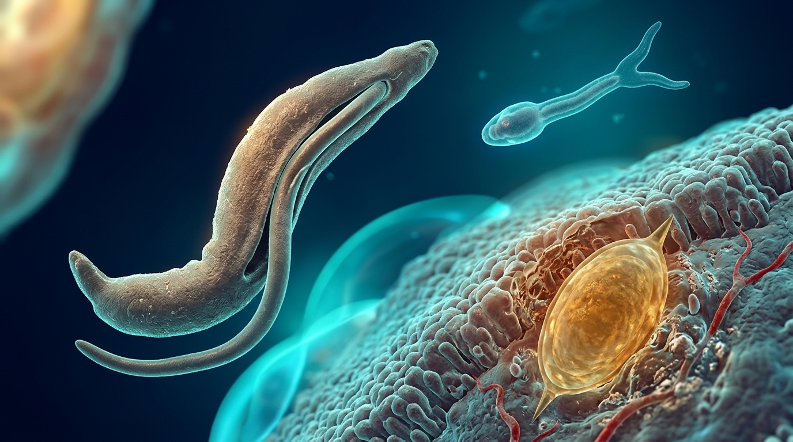
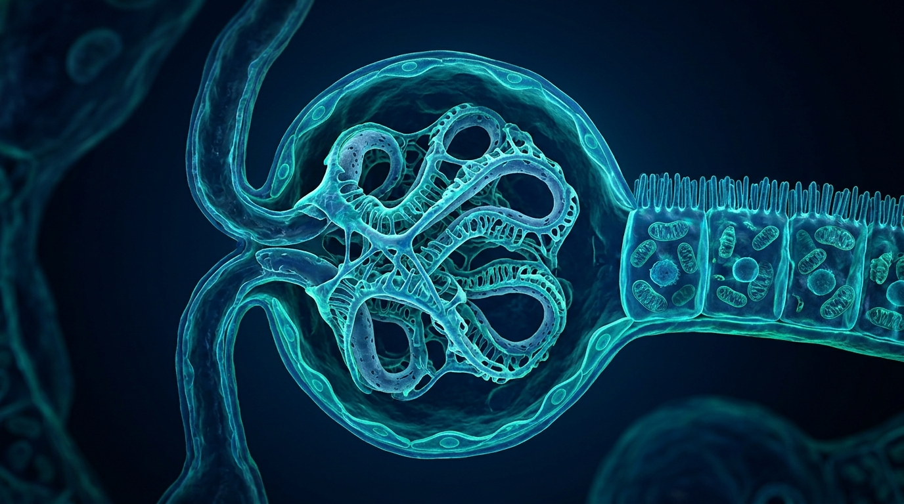
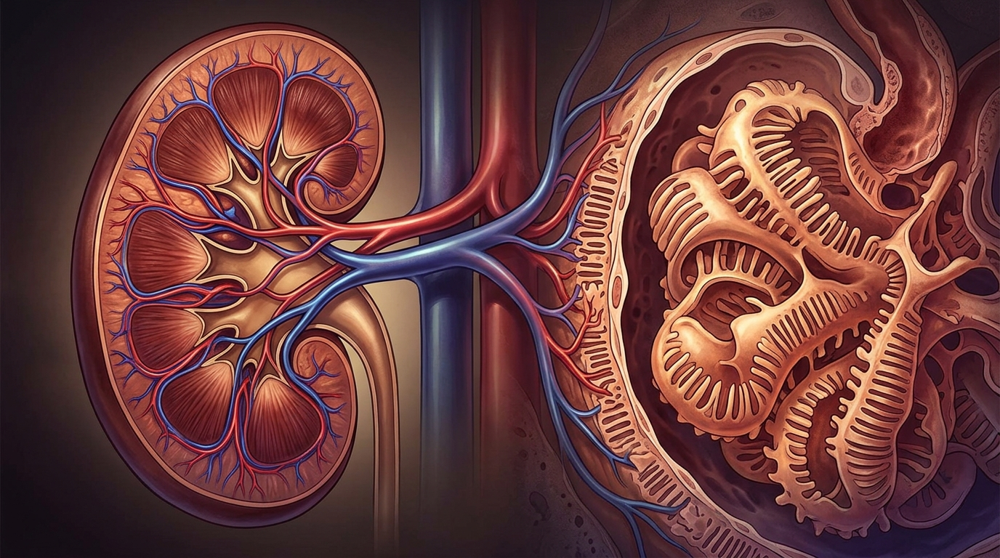

جامعة الأزهر - كلية الطب (بنين) بالقاهرة
Al-Azhar Faculty of Medicine | بنك الأسئلة والتدريب التفاعلي
موديول الكلى والجهاز البولي (Renal System)
منصة تعليمية متكاملة لطلاب كلية الطب، تغطي كافة أقسام موديول الكلى والجهاز البولي مقسمة علمياً حسب المواد والحالات السريرية، مع الإجابات النموذجية المعتمدة وشرحها الطبي الدقيق.
770
إجمالي الأسئلة والحالات السريرية
8 + 1
أقسام المواد وبنك الحالات
100%
إجابات وشروحات نموذجية معتمدة

⚡ فسيولوجيا الكلى والجهاز البولي
وظائف الكبيبة الكلوية، معدل الترشيح الكبيبي GFR، آليات التدفق بالتيار المعاكس، وإعادة امتصاص الماء والشوارد.

💊 فارماكولوجيا الكلى ومدرات البول
مدرات العروة (Furosemide)، الثيازايد، موفرات البوتاسيوم، ومثبطات الأنهيدراز الكربوني وتداخلاتها السريرية.

🩺 باثولوجيا وأمراض الكلى والمسالك
اعتلالات الكبيبات (Nephrotic vs Nephritic)، التهاب كبيبات الكلى الحاد وسريع الترقي، داء التبدل الطفيف، وأورام الكلى RCC.

🧫 ميكروبيولوجيا المسالك البولية
عدوى الجهاز البولي (UTI & CAUTI)، بكتيريا E. coli و Proteus، مزارع البول والمضادات الحيوية المناسبة.

🦠 طفيليات المسالك البولية
طفيليات البلهارسيا البولية Schistosoma haematobium، الحلزون الناقل Bulinus، وتشخيص وعلاج ديدان Enterobius.

🔬 نسيجيات الكلى (Renal Histology)
حاجز الترشيح الكبيبي، الخلايا الرجلاء Podocytes، جهاز مجاورات الكبيبة JGA، وخلايا الظهارة الانتقالية Facet cells.

🫀 تشريح وأجنة المسالك البولية
تشريح الكلى ومجاوراتها، مسار الحالب وتضيقاته التشريحية، عضلة Detrusor في المثانة، وأجزاء مجرى البول.

🧬 كيمياء حيوية وحصوات الكلى
أيض وتكسير البيورينات، حمض اليوريك، متلازمة Lesch-Nyhan، والتركيب الكيميائي لحصوات الكلى والبلورات البولية.

📋 الحالات السريرية والأسئلة المقالية
قسم يجمع كافة الحالات السريرية وسيناريوهات التشخيص والأسئلة المقالية وأسئلة علل مع الإجابات والشروح النموذجية بالإنجليزية.